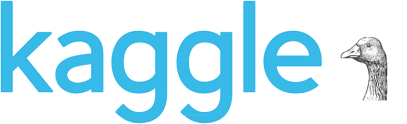

Sungguk Cha


Education

[B.E. @ UNIST] (Mar, 2014 ~ Feb, 2019)
Major: Computer Science and Engineering
Minor: Electrical Engineering
Projects


▶Drivable Area Semantic Segmentation Implementation



▶ Google Analytics Customer Revenue Prediction (570/3611(Top 16%))(Nov 2018)
▶ Google Analytics Customer Revenue Prediction (570/3611(Top 16%))(Nov 2018)


Honors & Awards
▶ On-Campus Scholarship, Merit based Scholarship
2014, 2016-2018
▶ Student StarCraft AI Tournament
▷ 4th ranked in student division
2017/2018
▶ Naver UNIST Undergraduate Poster Award, Bronze Prize
▷ Topic: Reinforcement Learning in StarCraft in Real-Time using Deep Learning
2017
▶ Samsung Dream Class Scholarship
Spring, 2017
▶ AAAI AIIDE StarCraft AI Competition, 28th ranked
2017
▶ CIG IEEE StarCraft AI Competition
▷ 3rd awarded in student/young professor division
2017
▶ Student StarCraft AI Tournament
▷ 3rd ranked in student division
2016/2017
▶ AAAI AIIDE StarCraft AI Competition, 11th ranked
2016
▶ CIG IEEE StarCraft AI Competition, 10th ranked
2016
▶ Korea Olympiad of Informatics, Encouragement Prize
▷ Regional representative of Daejeon
2013
▶ Dajeon Olympiad of Informatics, Gold Prize, Korea
2013
▶ Korea Olympiad of Informatics, Encouragement Prize
▷ Regional representative of Daejeon
2012
▶ Dajeon Olympiad of Informatics, Gold Prize, Korea
2012
▶ Korea Olympiad of Informatics, Encouragement Prize
▷ Regional representative of Daejeon
2010
▶ Dajeon Olympiad of Informatics, Gold Prize, Korea
2010
Experiences
▶ Undergraduate intern at SAIL (Statisitical AI Lab), UNIST, Korea
July 2018 - Feb 2019
▶ Undergraduate intern at ART Lab (Agents and Robotic Transportation Lab), UNIST, Korea
Dec 2017 - Feb 2018
▶ Undergraduate intern at Computer Vision Lab, UNIST, Korea
Sep 2017 - Dec 2017
▶ SKT T-brain research service invited. (Not worked)
▷ Research topic: machine learning application for StarCraft
Mar 2017
Skills
▶ Languages
▷ Korean, English, C/C++ , Python
▶ Toolkits
▷ Pytorch, Tensorflow, Vim, Linux Shell, GitHub, Latex
Teaching
▶ [TA] UNIST/CSE251: System Programming
Fall, 2019
▶ [TA] UNIST/ITP117: Introduction to AI Programming II
Spring, 2019
▶ [TA] UNIST/AHS161: What is "I"?
Spring-Fall, 2017